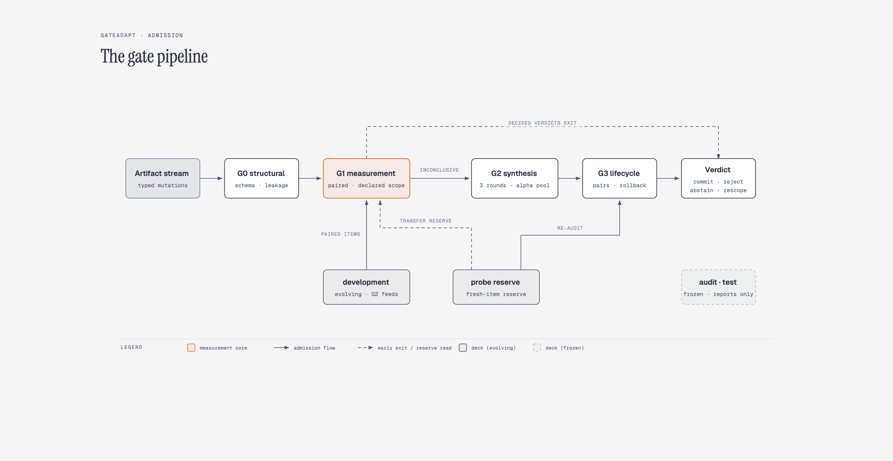
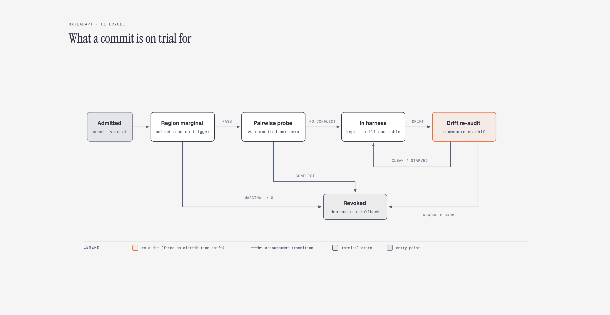
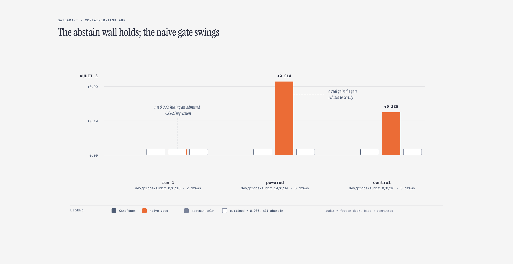
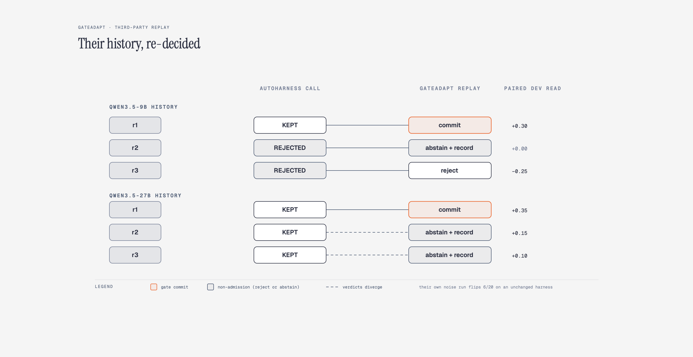

We introduce GateAdapt, a gate pipeline that governs the one decision every self-modifying agent system has to make: whether a proposed change to the agent's harness is admitted on evidence, rejected on evidence, or held as unproven. The question matters because a line of recent systems now rewrites agent harnesses automatically, and the only such system that ships a re-auditable history certifies its edits on evidence too weak to certify anything. In its own repository, an unchanged harness flips the outcome on 6 of 20 development tasks between runs, yet its admission rule accepted edits decided on smaller diffs than that noise floor. GateAdapt treats each proposed change as a typed mutation artifact carrying a deterministic scope predicate, measures it on paired episodes over the region the artifact claims, spends a shared SAFFRON-style [6] multiplicity budget on region-targeted synthesis for artifacts that remain inconclusive, and keeps committed artifacts under lifecycle checks that can revoke what interaction or drift makes harmful. On a planted benchmark with constructed ground truth the gate commits no harmful artifact at any effect size; on live substrates it abstains on what it cannot certify, including a container-task arm where abstention meant committing nothing, while resolving a scope-corrected improvement worth +0.115 on a frozen audit deck where measurement had enough power. Replayed against the comparator's own shipped history, the gate commits exactly the rounds with real measured gains, rejects the round with measured harm, and abstains on the two rounds the comparator kept on evidence inside its own noise band.
An LLM agent is a model plus a harness: the system prompt, the tool schemas, the retrieval policy, the turn budgets, the answer contract. In earlier work, GateRSI [12] treated the harness as fixed and verified what flowed through it, GateDPO [13] turned those verdicts into training pairs, and GateGRPO [14] grounded the same verifier family in reinforcement learning (RL) for repair. The next move, which a line of recent systems now makes, is to let the harness rewrite itself. AutoHarness [1], MemoHarness [10], A-Evolve [11], HarnessEvolve [8], and HarnessCompass [9] all iterate prompts and agent code against task feedback, and the question that decides whether any of them can be trusted is how an edit gets admitted.
The honest answer, from the only system that ships a re-auditable history, is on a diff too small to measure. AutoHarness [1] (the work from Huy X. Dang, not the same-named work from Xinghua et al. [2]) decides keep-or-reject on a single-shot pass-rate diff over a 20-task development split drawn from AppWorld [3], with a unit-test pass rate as tiebreak. Its own repository contains the countermeasure to that rule: a noise run re-evaluating the unchanged harness on the same 20 tasks flips the outcome on 6 of them. Pure re-measurement noise on that deck is plus or minus 30 points. Two edits it kept were decided on +15 and +10 point diffs, inside the noise band. The gate rule cannot tell those apart from the real +35 point gain of the first round, and the shipped history shows that it did not.
Before building the alternative, we also audited what exists for re-auditability. That is, whether a third party can re-decide each admission from data the system actually ships.
| system | per-edit verdicts shipped? | runnable harness states? | re-auditable? |
|---|---|---|---|
| AutoHarness [1] | kept/rejected per round + optimizer logs | harness files evolve per commit | yes |
| MemoHarness [10] | no shipped edit history | states constructible, not shipped | reproducible, not re-auditable |
| A-Evolve [11] | no verdict history | evolution infrastructure only | no |
| HarnessEvolve [8] | paper only | no | no |
| HarnessCompass [9] | paper only | no | no |
This is the actual measurement problem GateAdapt is built on, and we give it a name: the measurement asymmetry. The same small deck which cannot certify harm cannot certify help either. An evidence-gated system therefore abstains where a naive gate commits, on the regression the naive gate admits and on the real gain it happens to find. An honest system has to price both sides, and every number below is that accounting.
This report argues for measurement-gated admission, where each edit is evaluated on the region it declares rather than on a whole-suite diff. This is the admission rule harness evolution needs on substrates where per-edit effects are small relative to deck noise, meaning essentially every substrate that exists today. The contributions are:
The admission object is a mutation artifact: a typed harness change (a prompt patch, a tool-schema change, a retrieval rule, a budget rule, an output contract, a routing rule, or a memory rule) carrying a deterministic scope predicate over task features. No model sits inside the predicate, so the scope an artifact claims is executable: "the refusal half of the suite", "tasks marked hard", or simply "all tasks" names a region the gate can enumerate exactly, count, and price. A scope that matches nothing is a fact the pipeline can state rather than a blind spot.
Four decks carry the honesty invariant. The development deck is where admission is decided and the only deck that may grow. The frozen audit deck is fixed at declaration and carries every reported claim; the pipeline refuses writes to it by construction. A held-out test deck appears only in the final report. A fresh-item probe reserve powers the pre-commit transfer check. The invariant is executable rather than conventional. Nothing that votes on admission can contaminate what reports the outcome.
Four gates run in a fixed order per artifact, each emitting a verdict and a record:


Multiplicity is a SAFFRON-style [6] alpha-investing [7] pool. The run starts with alpha-wealth 0.10 split into four equal looks. A look that produces a decided verdict refunds its alpha, whereas an unresolved look forfeits it. When the pool is spent, later artifacts in the same family record a spent-budget verdict instead of absorbing a free test.
The verdicts an artifact can earn are commit, reject, abstain with record (a terminal abstention that keeps its evidence trail so a later run can re-decide it with more data), and scope-corrected commit, where the last is a commit onto an honestly narrowed region rather than the declared one. Every verdict is terminal and recorded.
Two design choices are worth stating up front, because the results only make sense with them. First, abstention is a verdict, not a failure. The gate is allowed to spend real budget trying to resolve an artifact and still end at a recorded abstention. Second, the audit deck never participates in decisions. Every comparison in this report between gates is a within-run measurement on a frozen slice the admission logic never saw.
The comparators are embedded as gate conditions, not described. The naive gate is the comparator's shipped rule reimplemented [1]: a whole-deck dev diff plus a tiebreak. The abstain-only gate abstains wherever measurement is inconclusive but never synthesizes. The marginal gate admits on a marginal-diff threshold. The budget-matched control gets the same evaluation budget as the full pipeline but spends it on random fresh items instead of region-targeted ones.
Six arms cover the full decision surface, from constructed truth to the comparator's own history:
| arm | substrate | model | what it tests |
|---|---|---|---|
| planted benchmark | constructed mutations, synthetic items | none (constructed) | verdict correctness vs known truth, power curves |
| live retrieval-QA arm | RGB [4], 600 task variants | openai/gpt-oss-20b |
the real loop on a public slice |
| container-task arm | 37 Terminal-Bench [5] tasks, docker episodes | nemotron-3.5-lightning-30b-a3b |
the same gates over real containers |
| breadth grid | corpus-grounded QA on the GateRSI substrate [12] | nemotron-3-ultra-550b-a55b, lightning-30b |
model-robustness of the abstain bound |
| drift replay | planted regime shift | none (constructed) | lifecycle re-audit under drift |
| third-party replay | AutoHarness [1] shipped history (Qwen3.5-9B/27B panels) | replayed, not run | per-artifact decision quality on real third-party data |
All reported live results are derived from recorded run artifacts: run reports, per-episode outcome records, and run logs. Where a measurement repeats an earlier draw, it replays the recorded outcome rather than re-sampling it.
The controlled arm is a constructed benchmark. It features 7 planted mutation classes, 4 effect sizes, 5 gate conditions, and 100 replicates, where ground truth is built in so every verdict can be scored as correct or wrong outright. The pre-registered scorecard came out 7 pass, 4 fail at the pre-registered size of 20 development items. The four fails share a single underlying mechanism rather than being four distinct bugs. Scope correction, pairwise interaction detection, narrow-scope commits, and inconclusive resolution all require powered evidence about a subregion or a pair. At 20 items, a true subregion holds only 5 to 7 elements, falling below the operators' resolution floor. A re-run at larger decks shows that three of the four cross their thresholds (narrow-scope commits at 320 items, misscoped scope-correction at 640, interaction detection at 320). The fourth stays a fail as registered, and correctly so. Its pooled denominator mixes artifacts that have no effect to find with artifacts that have an underpowered one, and abstaining on a non-effect is the correct terminal, not a miss.
The safety side of the scorecard never failed at any size. Artifacts planted to regress the suite were committed 0% of the time at every effect size, while the naive gate committed them 48% of the time at the smallest delta. Inert and shortcut artifacts were committed at 2% and under 1%; the naive gate commits roughly half of both. The advantage in resolved verdicts over the budget-matched control is significant at every delta of 5 points or more (McNemar p < 0.0005). This finding supports the synthesis claim that spending the same budget on region-targeted fresh items resolves more than spending it at random.
The honest read is the asymmetry itself, now measured on constructed truth. Verdict safety saturates early, while verdict resolution has a higher data floor. Resolution at the fidelity the scorecard asks for needs development decks on the order of a few hundred items per artifact, roughly 30x the registered size. Abstention is cheap; resolution costs items.
The first live arm runs the real loop on a public slice. It materializes 300 RGB [4] rows as 600 task variants (an answerable and a refusal twin per row) through the GateRSI [12] substrate, ensuring retrieval, prompt patches, and verdicts are all live. Two runs bracket the finding.
First run (a 30-item development deck, a 40-item probe reserve, a 200-item frozen audit deck, 2 episode draws per arm, 9 mutations, 1,058 fresh episodes). The gate resolved nothing it could certify. It rejected a mutation that would emit ungrounded answers on the refusal half of the slice and abstained on everything else, in four cases because that family's multiplicity budget was already spent. The development deck grew from 30 to 182 items through synthesis while the audit stayed frozen. The naive gate committed three edits for a net +0.030 that decomposes honestly into one real find (+0.074 on an answer-grounding patch), one lucky commit of an artifact declared harmful (measured +0.070; the expected harm never materialized), and one admission that landed inert (-0.020). The abstain-only gate abstained on 8 of 9 items and committed once on its tiebreak read, admitting an artifact expected to be inert that measured -0.080 on the frozen audit. The rule that abstains without resolving cannot tell "no evidence" from "mild harm", and its one blind admission cost the slice 9.5 points. That is the run that establishes the harm-avoidance half on a real substrate.
Powered run (an 80-item development deck, a 100-item probe reserve, the same frozen audit deck, 3 draws, four decisive mutations, and 267 fresh episodes). This is where the commit half landed. The gate's scope scan narrowed a weak-hit-pruning retrieval mutation onto the region where its effect is powered (the refusal half, marginal +0.20 on 100 items) and committed it there. This produced the first live commit-side resolution, worth +0.115 on the frozen audit. A second mutation was then committed on the strength of its measured conditional gain over that committed partner and subsequently revoked when the lifecycle interaction probe re-measured the pair. This marked the first live commit-revoke lifecycle with the third gate running end-to-end on real episodes. The two remaining decisive mutations were rejected on measurement.
The honest cost is stated plainly. The naive gate committed the same retrieval artifact globally and read +0.145 on audit, because the edit was mildly positive even outside its powered region. Region-limited admission left about +0.03 on the table. That is the price of knowing where the effect lives, and the same conservative bias shows up in every arm.
Episode economics are stated for the record. The gate spent 161 episodes to resolve the stream, while the naive gate spent 99 without the ability to determine which actions earned them, and the abstain-only gate spent 7 while resolving nothing.
The heaviest substrate runs Terminal-Bench tasks as real container episodes. Each measurement draw is a
full agent loop inside a per-task docker image, up to 12 turns against a hosted model endpoint, judged by
the task's own verifier. Across 37 tasks using nemotron-3.5-lightning-30b-a3b, the same
gates were evaluated in three runs over five mutations.
| run | decks (dev/probe/audit) | draws | GateAdapt | naive gate | abstain-only |
|---|---|---|---|---|---|
| baseline | 8/8/16 | 2 | 5 abstains, audit +0.000 | 3 commits, audit +0.000 (net: +0.0625 and -0.0625) | 5 abstains |
| powered | 14/8/14 | 8 | 5 abstains, audit +0.000 | 2 commits, audit +0.214 | 5 abstains |
| control | 8/8/16 | 6 | 5 abstains, audit +0.000 | 3 commits, audit +0.125 | 5 abstains |

Three findings, in order of sharpness:
Because each draw is a full container episode, the three runs share an episode cache keyed on task and mutation content: 947 draws across 222 keys were measured once and replayed, and they remain available for a larger-corpus attempt.
Two smaller arms bound the same finding from other directions.
Breadth. The abstention bound is model-robust. The same five-mutation grid re-run on two
endpoints about 18x apart in size (nemotron-3-ultra-550b-a55b and
lightning-30b-a3b), with 6 deck resamples each, produced 60 out of 60 recorded
abstentions. A weaker model does not make the gate fabricate a commit it cannot support; it
produces the same disciplined abstention, decision for decision.
Drift. This is a constructed replay of a peak-then-decline history. Artifacts committed honestly in the first regime have their true effect inverted when the task population shifts to the second, and the latent regime feature is one scopes cannot declare on, so only re-measurement can see the drift. With the lifecycle re-audit off, stale artifacts accumulate and the deployment score collapses toward zero or below (down to -0.468 at the largest delta). With it on, the re-audit revokes 54 to 99% of committed drifting artifacts depending on harm magnitude and retains the stable portion of the peak everywhere. An artifact whose scope has starved on the new distribution is flagged and kept, because absent data is not evidence of decline.
The last arm is the direct one: AutoHarness [1] ships per-task pass/fail panels for every round on the same 20 tasks, so its keep/reject history can be re-decided under measurement discipline with no episodes at all. Each round's shipped panel is the paired measurement; the gate re-decides the artifact.
| round | their call (9b) | gate replay | paired read |
|---|---|---|---|
| r1 | KEPT | commit | 0.15 -> 0.45, +0.30 |
| r2 | REJECTED | abstain + record | +0.00 |
| r3 | REJECTED | reject | -0.25 |
| round | their call (27b) | gate replay | paired read |
|---|---|---|---|
| r1 | KEPT | commit | 0.20 -> 0.55, +0.35 |
| r2 | KEPT | abstain + record | +0.15 (paired sign test p = 0.25) |
| r3 | KEPT | abstain + record | +0.10 (paired sign test p = 0.69) |

The gate commits exactly the rounds with real measured gains, rejects the round with measured harm, and abstains where evidence is underpowered, including the two rounds the comparator committed on diffs smaller than its own measured noise floor. The naive-admission failure is visible in shipped history rather than hypothesized. The honest framing is kept. The comparator's aggregate outcome was still strongly positive on its held-out evaluation (+29.8 and +36.9 points from the ReAct baseline to the final harness), so the replay does not show a naive gate losing this particular stream. What it isolates is decision quality per artifact. The weak commits were certified anyway, on evidence that could not certify them.
Across a constructed substrate, two live substrates, a container arm, a drift arm, and a third party's shipped history, one law held without exception. The measurement floor binds before anything else does. Abstention is cheap and safe; resolution is possible but has a price in items, and the price is quantified (development decks on the order of a few hundred per artifact for scope operators). The gate never admitted a harmful artifact anywhere, and it never committed on empty or noise-level evidence; it paid for that by refusing real gains this report discloses (+0.03 of diffuse gain on the retrieval slice, +0.214 on the container arm, and a reject of an artifact that had read +0.074 under a different deck draw). The naive gate's failure modes are all measured rather than asserted: an admitted regression, a commit backed by zero on-region episodes, verdict churn across deck draws, and weak keeps inside its own noise band in shipped history.
The commit-side evidence exists where the substrate can power it. This includes a scope-corrected +0.115 on the retrieval slice, and the full admit-interact-revoke lifecycle on live episodes. Where the substrate cannot power it, a 37-task corpus or a 20-item development deck, the gate says so, which is the point of a gate.
The natural next steps are known but simply expensive. These include a larger container corpus to power a measured commit-side verdict, resampled replicates for the powered live run, and a solver-scale replay that re-executes the comparator's optimizer loop rather than re-deciding its panels. I could not run those at this project's scale on the compute I have, and I would rather say so than pretend the single-seeded numbers are more than they are. If you work on adaptive harnesses, agent evaluation, or verifier-gated self-improvement and see something here that contradicts your own numbers, I would genuinely like to hear about it. And if you have the compute resources, an open position, or a project you want to collaborate on, I am open to both work and collaboration. Please reach out at taneemishere@gmail.com.